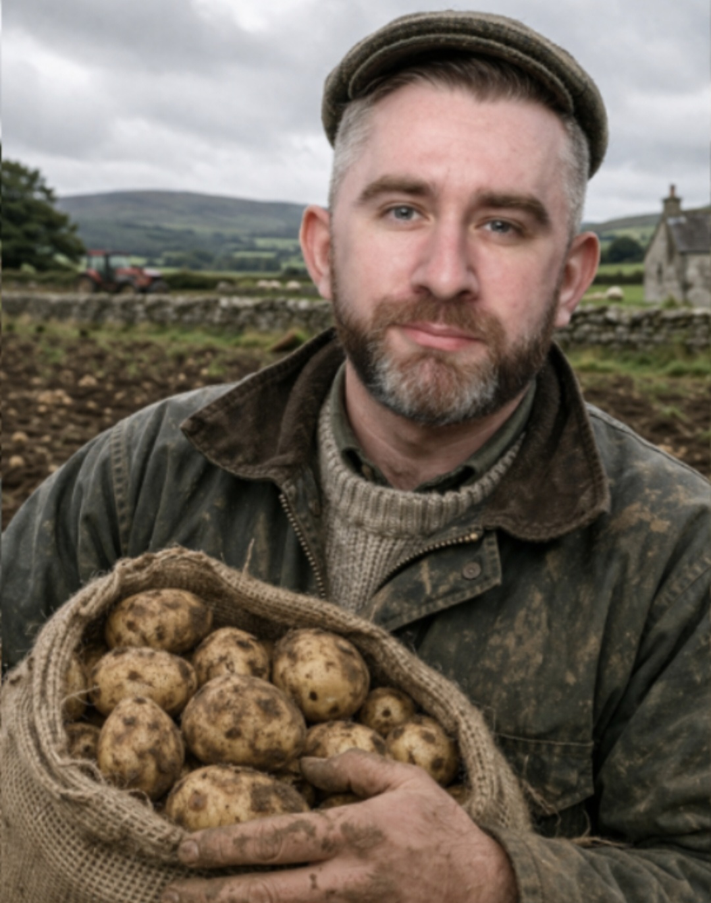

Historical Overview
The potato (Solanum tuberosum) became one of the most important crops in Irish history, deeply shaping agriculture and rural society.
By the 1800s, many Irish communities depended heavily on the potato as a primary food source.
Between 1845 and 1852, the Great Irish Famine occurred when potato blight destroyed crops across Ireland,
leading to mass starvation, disease, and emigration that reshaped the population permanently.
The Irish Republican Army (IRA) refers to multiple historical organisations involved in Irish republican
movements and independence struggles during different periods of Irish history.
Philip Holding His Potatoes

Those who don’t know… those who know.

Irish agricultural life was heavily based on small-scale farming systems,
with potatoes acting as a cornerstone of rural survival and economy.
Legacy
The potato remains one of the most widely cultivated crops in the world today, feeding billions and continuing its agricultural importance globally.